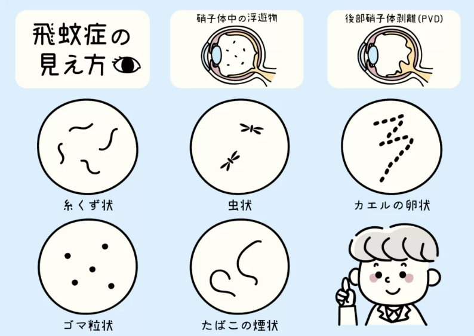

問題 1
飛蚊症の原因として正しいのはどれですか？
硝子体に濁りができ、その影が網膜にうつる
角膜に傷ができ、光が乱反射する
水晶体が濁り、光が遮られる
網膜に穴があき、光を感じにくくなる
解説：飛蚊症は、本来透明なはずの硝子体に何らかの原因で濁りができ、その影が網膜にうつることで目の前に見えるようになります。濁りは実際には目の中にあるため、目を動かすと一緒に動きます。
患者様への説明ポイント：患者さんへの説明：「目の中のゼリー状の部分に濁りができて、その影が見えている状態です」と伝えると分かりやすいです。
問題 2
飛蚊症の見え方として患者さんが訴える内容に含まれない「のは」どれですか？
視野の一部が欠けて見える
蚊が飛んでいるように見える
糸くずのようなものが見える
輪のようなものが見える
解説：飛蚊症では、蚊、水玉、ハエ、黒いスス、糸くず、お玉じゃくし、輪などが見えます。「視野の一部が欠けて見える」は網膜剥離などの症状であり、飛蚊症の典型的な訴えではありません。

飛蚊症の見え方：糸くず状、虫状、カエルの卵状、ゴマ粒状、たばこの煙状など様々なパターン
患者様への説明ポイント：問診では「どんな形のものが見えますか？」と具体的に聴取しましょう。
問題 3
後部硝子体剥離の好発年齢として正しいのはどれですか？
解説：後部硝子体剥離は60代前半に好発します。ただし中等度以上の近視の場合には10年位早くおこります。後部硝子体剥離は突然の飛蚊症の原因として最も多いものです。
問題 4
後部硝子体剥離が通常より早くおこる条件として適切「ではない」のはどれですか？
遠視がある場合
中等度以上の近視がある場合
白内障の手術を受けた場合
高齢者の場合
解説：中等度以上の近視の場合には後部硝子体剥離は10年位早くおこります。また白内障の手術を受けた場合には1年以内に出現することもあります。遠視は後部硝子体剥離を早める要因ではありません。
患者様への説明ポイント：近視が強い患者さんや白内障術後の患者さんが飛蚊症を訴えた場合は、より注意が必要です。
問題 5
後部硝子体剥離に伴って網膜裂孔が発生する割合として正しいのはどれですか？
解説：後部硝子体剥離の6〜19%に網膜裂孔がおこります。網膜裂孔は放置すると網膜剥離になるため、後部硝子体剥離が疑われる場合は眼底検査で網膜裂孔の有無をチェックすることが大切です。
患者様への説明ポイント：飛蚊症の患者さんには散瞳して精密眼底検査を行う必要性を説明しましょう。
問題 6
緊急性が高い飛蚊症の特徴として適切「ではない」のはどれですか？
いつからか分からないが、明るい日に気づいた
突然発症した
ゴミクズや糸クズなど形がはっきりしている
大きく、色が濃い
解説：後部硝子体剥離による飛蚊症は突然おこり、形がはっきりしていて大型で色が濃いのが特徴です。「いつからか分からない」「明るい日に白い壁を見て気づいた」という場合は生まれつきのものや離水によるもので、緊急性は低いことが多いです。
患者様への説明ポイント：問診で「いつから？」「急に？」を必ず確認しましょう。突然発症は要注意です。
問題 7
飛蚊症の問診で確認すべき重要な随伴症状はどれですか？
ピカピカ光るものが見えたかどうか
目がかゆいかどうか
涙が出るかどうか
目やにが出るかどうか
解説：飛蚊症になる前か後に「ピカピカ光るものが見えた」場合には、後部硝子体剥離がおこったと考えて間違いありません。これは光視症と呼ばれ、網膜裂孔のリスクを示唆する重要な症状です。
患者様への説明ポイント：問診で「チカチカ光るものは見えませんでしたか？」と必ず確認しましょう。
問題 8
網膜裂孔を放置した場合に進展する疾患はどれですか？
解説：網膜裂孔は放置すると、裂孔から液体状になった硝子体が網膜の後に入り込んで網膜剥離になります。網膜剥離は入院・手術が必要な重大な病気です。
患者様への説明ポイント：飛蚊症を訴える患者さんには、早めの眼底検査の重要性を説明しましょう。
問題 9
飛蚊症を訴える患者さんへの対応として最も適切なのはどれですか？
精密眼底検査を受けるよう説明する
加齢現象なので心配ないと説明する
様子を見て悪化したら受診するよう伝える
点眼薬で治療できると説明する
解説：飛蚊症を自覚したら眼科を受診し、精密検査を受け、放置しておいてよいものかどうかを診てもらうことが大切です。特に60歳前後に突然飛蚊症を自覚した場合には、なるべく早く眼科医を訪ね、後部硝子体剥離や網膜裂孔の有無をチェックしてもらうことが重要です。
患者様への説明ポイント：患者さんには「散瞳して目の奥を詳しく調べる必要があります」と説明し、精密眼底検査を促しましょう。